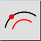
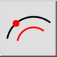
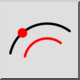
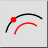

Concentrico (attraverso punto)
Barra degli strumenti / Icona:
 

Menù: Disegna > Arco > Concentrico (attraverso punto)
Scorciatoia: A, G
Comandi: arcconcentricthrough | ag
Questa è una traduzione automatica.
Barra degli strumenti / Icona:
 

Menù: Disegna > Arco > Concentrico (attraverso punto)
Scorciatoia: A, G
Comandi: arcconcentricthrough | ag
Con questa funzione potete creare archi concentrici attraverso punti definiti.